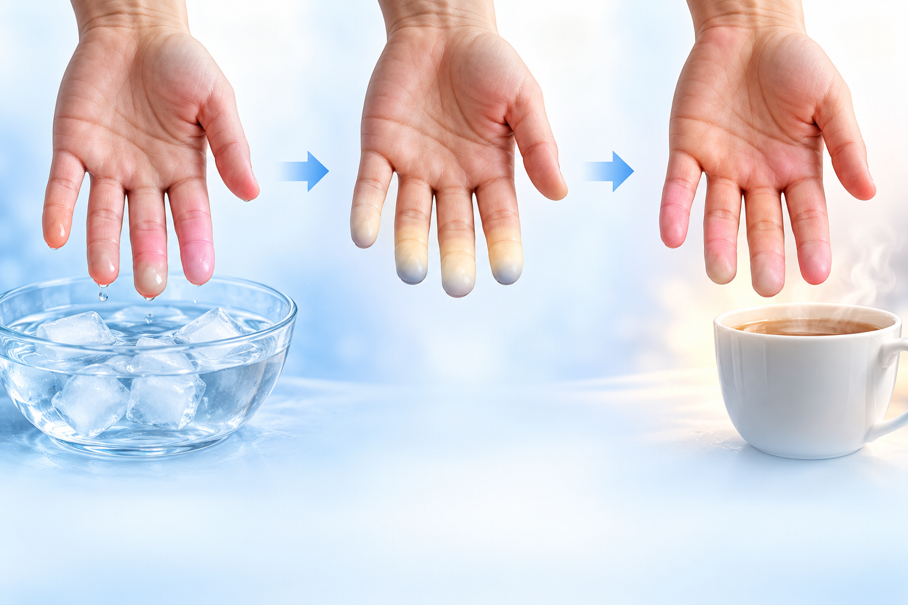

PATIENT EDUCATION · RHEUMATOLOGY
눈과 입이 계속 마를 때,
쇼그렌병을 확인하는 이유
증상과 혈액검사를 함께 보고 다음 진료를 정합니다
관절이 아프지 않아도 건조 증상을 여쭙는 이유가 있습니다
 입마름·눈마름도 여쭙습니다
입마름·눈마름도 여쭙습니다검사 결과는 증상과 함께 해석합니다
이름이 어려워도 무엇을 보는 검사인지만 알면 됩니다
양성이라는 결과만으로 병을 단정하지 않습니다
 감염이 있을 때
감염이 있을 때류마티스 관절염 설명에서 연자가 강조한 원칙입니다
관절 통증만 있는지, 관절이 붓는지가 먼저입니다
낮은 값은 건강한 사람에서도 흔히 나옵니다
다른 질환이나 건강한 상태에서도 양성이 나올 수 있습니다
C형 간염 연구 높은 값은 경과를 지켜봅니다
높은 값은 경과를 지켜봅니다검사 방법 때문에 놓칠 수 있는 항체가 있습니다
쇼그렌병과 관련해 보는 항체는 항Ro와 항La입니다
전문 진료로 연결할지 정하는 단서가 됩니다
 레이노 현상
레이노 현상
찬 곳에서손끝 색이 변함따뜻해지면 회복ANCA, HLA-B27, 그리고 증상과 무관하게 하는 검사
ANCA 항체쇼그렌병을 확인하는 이유와 검사 결과를 읽는 원칙입니다
검사의 이유와 결과의 의미를 함께 이해하는 데 도움이 됩니다
증상과 검사 결과를 함께 보고 필요한 평가를 정합니다